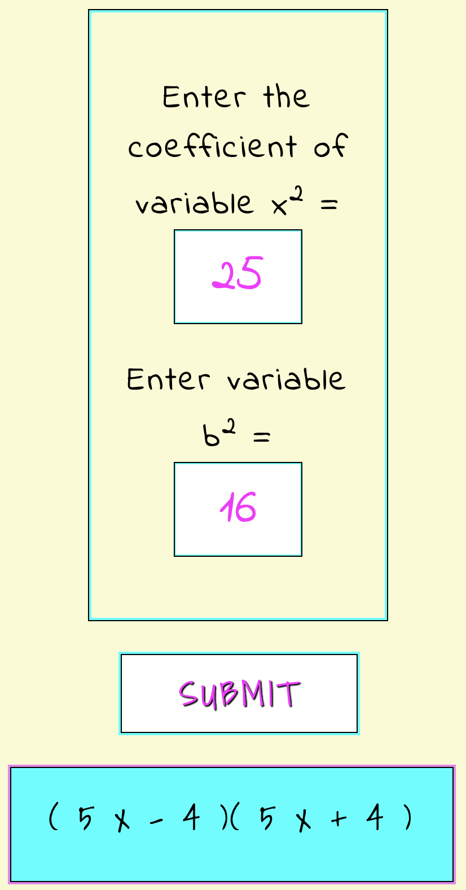
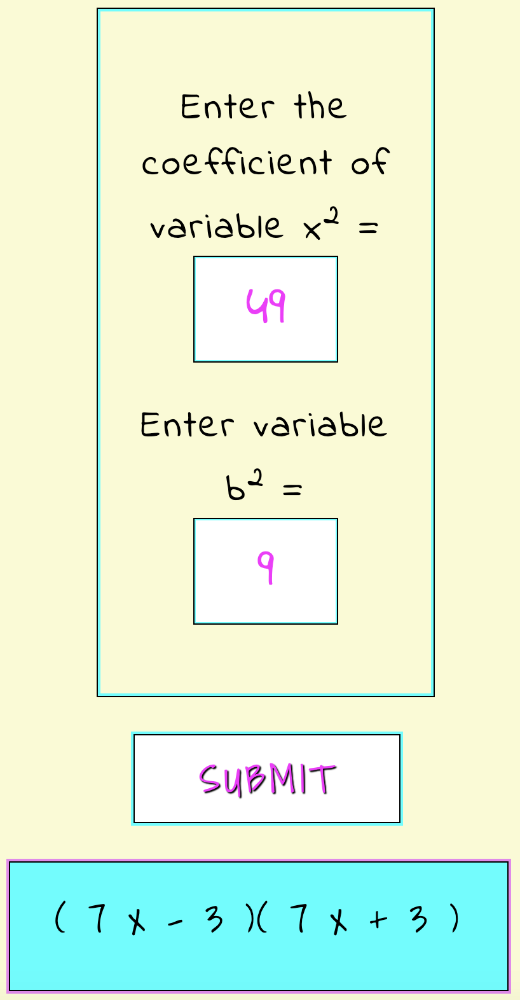

To factor the difference of two squares, you must first know what a "squared" number means. A number multiplied by itself results in a squared number. The first ten perfect squares are listed below.
12 = 1 x 1 = 1
22 = 2 x 2 = 4
32 = 3 x 3 = 9
42 = 16
52 =25
62 = 36
72 = 49
82 = 64
92 = 81
102 = 100
It is important to memorize the first ten perfect squares. Otherwise, when you need to factor a polynomial, you won't recognize what technique to use. Until you've memorized this list, refer back to it for each problem.
Perfect square polynomials occur when you foil two binomials and the middle terms cancel eachother out.
For example, if you use FOIL to multiply (x - 4)(x + 4) you get x2 + 4x - 4x - 16 which equals x2 - 16.
To factor the difference of two squares, they give you the answer, x2 - 16, and you have to determine what two binomials FOILed to make that answer. In this case, (x + 4)(x - 4).
The Formula to Factor the Difference of Two Squares
x2 - a2 =
(x + a)(x - a)
Example:
Factor x2 - 4
Step 1: Rewrite 4 as some number squared. Refer to the list above until you have it memorized.
x2 - 4 = x2 - (2)2
Using the formula above, with a = 2, x2 - a2 = (x + a)(x - a) this expression becomes
(x + 2)(x - 2) *Answer
Example:
Factor x2 - 25
Step 1: Rewrite 25 as some number squared. Refer to the list above until you have it memorized.
x2 - 25 = x2 - (5)2
with a = 5. Using the formula, this expression becomes
(x + 5)(x - 5) *Answer
Example:
Factor x2 - 81
Step 1: Rewrite 81 as some number squared. Refer to the list above until you have it memorized.
x2 - 81 = x2 - (9)2
with a = 9. Using the formula, this expression becomes
(x + 9)(x - 9) *Answer
Example:
Factor x2 - 49
x2 - 49 = x2 - (7)2
Using the formula, this expression becomes
(x + 7)(x - 7) *Answer
Example:
Factor x2 - 121
x2 - 121 = x2 - (11)2
Using the formula, this expression becomes
(x + 11)(x - 11) *Answer
The Formula to Factor the Difference of Two Squares
ax2 - b2 =
(ax - b)(ax + b)
Example:
Factor 25x2 - 16

Example:
Factor 49x2 - 9

Difference of Two Squares Calculator
Enter the coefficient of variable x2 =
Enter variable b2 =
To check your answer, you can FOIL the binomials above and verify that your answer results in the original problem that you started with.
Remember:
FOIL-ing
and
Factoring
are
"Inverse Operations"
Each one undoes the other.